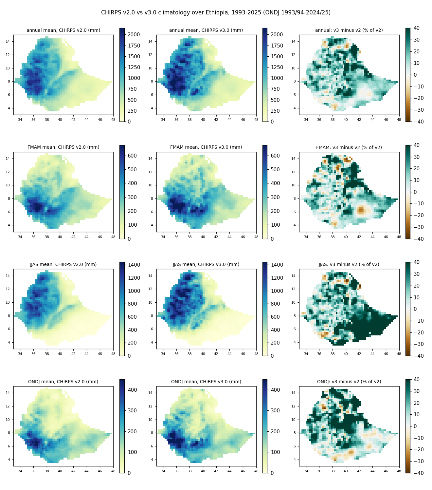

Seasonal rainfall outlook
Research reconstruction · not an official forecast
Observations: CHIRPS v3.0 since 11 October 2026. Every cycle is calibrated and verified with CHIRPS v3.0. The 2026 forecasts shown here were recalibrated with v3.0 after their outcomes were known, so they are retrospective reconstructions, not forecasts issued in advance. The versions calibrated with CHIRPS v2.0 are in the release archive (release 2026-10-10.2); the v2.0 vs v3.0 comparison is in the Methods section.
Average local probability
Rainfall amount
Forecast signal
Historical skill
Signal strength describes how far this forecast's probabilities depart from climatology. Historical skill describes how forecasts made the same way scored in past years. A strong signal is not a confidence rating.
All targets in this cycle
Official outlook comparison
Cycle status and record
Maps
How to read this map
Grey, white and blank areas
Light grey: outside the selected area. Dark grey: inside the area but without values, for example cells where reference-period rainfall is too small for tercile categories, or (percent maps) below 10 mm. White on tercile maps: no category reaches 40%, or two categories tie. Sea cells have no CHIRPS data.
Smoothing and resolution. Maps are drawn on a 12× finer display grid with light Gaussian smoothing (σ = 0.6 grid cells); all numbers on this page use the original 0.25° grid. The model's own resolution is about 1°: each model cell covers 4×4 grid cells, so detail within a 1° box comes from local CHIRPS rainfall statistics used in the amount correction, not from the model.
Verification
Frozen forecasts compared with official CHIRPS v3.0 observations once a target period is complete. Each result is one season or month, so it shows what happened this time, not long-term reliability.
Historical performance
How forecasts made with the same method scored in past years against climatology (the observed frequency of each tercile in the training years, about one-third each). The main number is the cross-validated 1993–2016 score: each year is forecast with parameters fitted without that year. Later years are exploratory: they were seen while the method was chosen.
Historical verification explorer
The evidence behind the scores above, for the selected cycle, target and area. Choose the evaluation period; all diagnostics use the blended probabilities against climatology.
Historical performance by rainfall region
Rainfall climatology and domains
Where does a season's rain matter? Before a forecast domain is chosen, this review computes the observed climatology (seasonal total, annual total and the season's share), compares it with EMI's published long-term maps, and tests every combination of rainfall and annual-share cutoffs. Cutoffs are chosen for what the domain means climatologically, never to improve a forecast score.
Methods & data
In brief
Each cycle starts from the ECMWF SEAS5 seasonal ensemble issued on the 1st of the initialization month. For every 0.25° grid cell in Ethiopia the forecast rainfall is corrected toward the CHIRPS observed mean and variability, then turned into tercile probabilities (below, near or above normal relative to the cycle's CHIRPS reference period). The probabilities are finally blended with climatology using one weight per target, chosen to give the best past scores. Climatology assigns approximately one-third probability to each tercile; the calculations use the observed category frequencies of the training reference period.
Probabilities and amounts are produced separately: the probability skill (RPSS) on this site refers to the blended probabilities, and the rainfall amount skill (CRPSS) to the amount-corrected ensemble.
The raw benchmark is the uncorrected model: raw ECMWF members counted against each cell's CHIRPS tercile limits, with no correction, smoothing or blend. For May-initialized JJAS over 2017–2025 it scores RPSS −0.44, far below climatology, which is why calibration is needed.
Data
| Source | Details |
|---|---|
| ECMWF SEAS5 | Copernicus CDS seasonal-original-single-levels, system 51, total precipitation, 1993 to the forecast year; 25 members to 2016, 51 from 2017; 1° grid |
| CHIRPS v3.0 | monthly rainfall, official 0.05° Africa product averaged onto the 0.25° grid (5 × 5 cells); archive from 1993; verification months from the official monthly files, checked against the archive where they overlap. Funk et al. (2026), The Climate Hazards Center Infrared Precipitation with Stations, Version 3, Scientific Data 13, 718, doi:10.1038/s41597-026-07096-4. |
| Areas | All Ethiopia (1,484 cells) and, per season, the rainfall domains offered in the area selector — FMAM: FMAM rainfall contribution domain; FMAM main-season rainfall domain (Belg / Gu / Ganna, >=40% of annual) · JJAS: JJAS R1+R2 rainfall domain · ONDJ: ONDJ R3 (Deyr) rainfall domain. Each definition is shown under the selector and in the rainfall-domain review. The domains are for display and summaries only; calibration uses every cell. |
CHIRPS v2.0 vs v3.0 (why and what changed, 11 October 2026)
CHIRPS v3.0 (Funk et al. 2026) replaced v2.0 for calibration and verification. Over Ethiopia, 1993–2025, v3.0 is about 15% wetter (consistent with its gauge-undercatch correction) while each season's share of annual rainfall and the ranking of years agree closely, so tercile limits move up. The same method was refitted on v3.0: the decision gates give the same outcome, and skill is similar overall. Each version is scored against its own observations.
| Season | Mean rainfall v2.0 → v3.0 | National series correlation | Same tercile category |
|---|---|---|---|
| FMAM | 249 → 279 mm (+12%) | 0.978 | 78% |
| JJAS | 441 → 518 mm (+17%) | 0.973 | 71% |
| ONDJ | 141 → 163 mm (+16%) | 0.984 | 78% |
| Cycle | Cross-validated RPSS 1993–2016, v2.0 → v3.0 | Rainfall-amount CRPSS (development run), v2.0 → v3.0 |
|---|---|---|
| May · JJAS | +0.046 → +0.027 | +0.017 → -0.018 |
| January · FMAM | +0.027 → +0.032 | -0.001 → +0.016 |
| February · FMAM | +0.022 → +0.021 | +0.053 → +0.071 |
| September · ONDJ | +0.020 → +0.039 | +0.181 → +0.178 |

Workflow (eight scripted stages)
- 1
Download
ECMWF SEAS5 (system 51) daily accumulated precipitation from the Copernicus CDS for the initialization month, 1993 to the forecast year.
download_seasonal_forecasts_daily_c3s.py - 2
Inspect
Inventory every year: initialization, lead times, member counts and accumulation increments (GRIB packing tolerance 0.2 mm).
inspect_inputs.py - 3
Prepare
De-accumulate to daily totals, sum the season and each month; CHIRPS on the same dates.
prepare_seasonal.py · run_monthly.py - 4
Regrid
Each 1° model cell is copied into its 4×4 block of 0.25° CHIRPS cells (no interpolation).
regrid_seasonal.py - 5
Calibrate
Per-cell amount correction, smoothed tercile counts and one climatology-blend weight per target.
final_shared_blend.py - 6
Evaluate
Nested cross-validation 1993–2016; exploratory fixed-fit scores for later years; whole-year significance tests.
local_blend.py · decision_gates.py - 7
Deliver
Maps, summaries and an offline gallery; forecasts frozen with SHA-256 hashes before observations are used.
run_operational.py · build_season_products.py - 8
Verify
Official CHIRPS v3.0 monthly files, checked against the archive where they overlap, scored per month and season.
prepare_verification_2026.py · verify_frozen_2026.py
Every stage is a script in scripts/; documents in docs/ record each step, issue and decision (runbook: docs/38; per-season guides: docs/40).
Equations
- Amount correction per cell, equal weight per year:
x̂ = max(0, μobs + r·(x − μmodel)),r = clip(σobs/σmodel, 0.5, 2) - Tercile probabilities from the corrected members against CHIRPS tercile limits, smoothed:
(n + 0.5)/(M + 1.5) - Climatology blend:
pfinal = (1 − λ)·pmodel + λ·pclimatology, with one λ per target fitted on leave-one-year-out RPS.
pclimatologyis, for each grid cell, the observed frequency of each tercile in the training reference years (about one-third each; it differs slightly because of sample size, category limits and ties). - Skill score:
RPSS = 1 − RPSforecast / RPSclimatology; RPSS +0.05 means a 5% lower ranked probability score than climatology. CRPSS is the same for rainfall amounts.
Method and references
Rainfall amounts are corrected cell by cell with mean–variance scaling (also called simple bias adjustment or variance scaling; Teutschbein & Seibert 2012; Torralba et al. 2017; Manzanas et al. 2019): each member is shifted to the CHIRPS mean and its anomaly rescaled by the ratio of CHIRPS to model standard deviation (equations above). It corrects the mean and spread, not the shape of the distribution; it is not quantile mapping. The model mean and spread are pooled over all members and years, with equal weight per year (25 members to 2016, 51 from 2017); training years 1993–2025.
Probabilities are the share of corrected members in each CHIRPS tercile (ensemble relative frequency; Wilks 2019), smoothed so no category is 0 or 1, then blended with climatology. Weighting a model against climatology follows Rajagopalan et al. (2002) and Robertson et al. (2004); here one weight per target is fitted by minimising the ranked probability score of leave-one-year-out probabilities.
Scores: ranked probability score (Epstein 1969) and continuous ranked probability score (Hersbach 2000), as skill scores against climatology. Forecasts: ECMWF SEAS5 (Johnson et al. 2019); observations: CHIRPS v3.0 (Funk et al. 2026), v2.0 before 11 October 2026 (Funk et al. 2015).
Choices of this project, not taken from a single paper: the 0.5–2 limits on the spread ratio, mean-only correction where the model spread is below 1 mm, clipping at 0 mm (its weakness in dry months, issue I-08), equal weighting of years, the count smoothing and one blend weight shared by all cells. A square-root-space amount correction passed the gate for amounts and is recommended for the next cycle (docs/36). Details: docs/46. DOIs checked on Crossref, 11 October 2026.
- Epstein, E. S. (1969). A scoring system for probability forecasts of ranked categories. Journal of Applied Meteorology, 8(6), 985–987. doi:10.1175/1520-0450(1969)008<0985:ASSFPF>2.0.CO;2
- Funk, C., et al. (2015). The climate hazards infrared precipitation with stations — a new environmental record for monitoring extremes. Scientific Data, 2, 150066. doi:10.1038/sdata.2015.66
- Funk, C., et al. (2026). The Climate Hazards Center Infrared Precipitation with Stations, Version 3. Scientific Data, 13, 718. doi:10.1038/s41597-026-07096-4
- Hersbach, H. (2000). Decomposition of the continuous ranked probability score for ensemble prediction systems. Weather and Forecasting, 15(5), 559–570. doi:10.1175/1520-0434(2000)015<0559:DOTCRP>2.0.CO;2
- Johnson, S. J., et al. (2019). SEAS5: the new ECMWF seasonal forecast system. Geoscientific Model Development, 12, 1087–1117. doi:10.5194/gmd-12-1087-2019
- Manzanas, R., et al. (2019). Bias adjustment and ensemble recalibration methods for seasonal forecasting: a comprehensive intercomparison using the C3S dataset. Climate Dynamics, 53, 1287–1305. doi:10.1007/s00382-019-04640-4
- Rajagopalan, B., Lall, U., & Zebiak, S. E. (2002). Categorical climate forecasts through regularization and optimal combination of multiple GCM ensembles. Monthly Weather Review, 130(7), 1792–1811. doi:10.1175/1520-0493(2002)130<1792:CCFTRA>2.0.CO;2
- Robertson, A. W., Lall, U., Zebiak, S. E., & Goddard, L. (2004). Improved combination of multiple atmospheric GCM ensembles for seasonal prediction. Monthly Weather Review, 132(12), 2732–2744. doi:10.1175/MWR2818.1
- Teutschbein, C., & Seibert, J. (2012). Bias correction of regional climate model simulations for hydrological climate-change impact studies: review and evaluation of different methods. Journal of Hydrology, 456–457, 12–29. doi:10.1016/j.jhydrol.2012.05.052
- Torralba, V., et al. (2017). Seasonal climate prediction: a new source of information for the management of wind energy resources. Journal of Applied Meteorology and Climatology, 56(5), 1231–1247. doi:10.1175/JAMC-D-16-0204.1
- Wilks, D. S. (2019). Statistical Methods in the Atmospheric Sciences (4th ed.). Elsevier.
How the method was chosen
A change is adopted only if it improves the cross-validated 1993–2016 scores (Holm-adjusted p < 0.05 over the five JJAS targets) and does not worsen 2017–2025. Also evaluated and not adopted: regularized Dirichlet recalibration and per-cell or regime-specific blend weights.
| Candidate change | Score change 1993–2016 | Score change 2017–2025 | Decision |
|---|---|---|---|
| Fit the blend weight on Ethiopia only | +0.0003 to +0.0009 | −0.0043 to +0.0001 | Not adopted |
| Square-root amount correction (probabilities) | −0.0003 to +0.0008 | −0.0018 to −0.0002 | Not adopted |
| Remove the climatology blend | +0.0194 to +0.0508 | −0.0115 to +0.0310 | Not adopted |
| Plain climatology | −0.0002 to +0.0121 | +0.0038 to +0.0197 | Not adopted |
| Square-root amount correction (amounts, CRPS in mm) | −0.13 to −0.06 | lower in all targets | Passes for all targets; candidate for the next cycle |
Ensemble size and spread
| Target | RPS, 51 members | RPS, 25-member subsets (mean) | Spread / error (hindcast → 2017–2025) |
|---|---|---|---|
| JJAS | 0.4404 | 0.4420 | 0.68 → 0.75 |
| Jun | 0.4598 | 0.4601 | 0.62 → 0.63 |
| Jul | 0.4449 | 0.4467 | 0.71 → 0.76 |
| Aug | 0.4405 | 0.4415 | 0.74 → 0.73 |
| Sep | 0.4578 | 0.4587 | 0.75 → 0.76 |
Calibration parameters are fitted mostly on 25-member hindcasts and applied to 51-member forecasts. In 2017–2025 the 51-member forecasts scored about the same as, or slightly better than, 25-member subsets, so the transfer did not degrade scores in the years tested; this does not show it is neutral in every year or region. The corrected ensemble is under-dispersive (spread smaller than error), which the climatology blend partly offsets. Monthly and seasonal outlooks are calibrated separately: for JJAS 2026 over all Ethiopia the corrected monthly means sum to 432 mm against 430 mm for the season (+1.7 mm).
Quality control
- Every forecast file is inventoried; re-downloaded years were bit-identical, confirming SEAS5 system 51.
- Small negative daily increments (≤ 0.15 mm) are GRIB packing rounding; tolerated up to 0.2 mm and clipped, and the seasonal sum is checked.
- CHIRPS sea cells (223) are always missing; no partial season enters any fit.
- Verification observations are compared with the archive in the overlap year (tolerance 0.0001 mm/day) before use.
Limitations
- Few evaluation years and single verification seasons give wide uncertainty; regional and monthly results are noisy.
- The later evaluation years were inspected during method development; the cleanest evidence is the cross-validated 1993–2016 score.
- The 0.25° maps repeat 1° model information; they add no dynamical detail.
- All cycles are research reconstructions produced after their initialization dates, not official EMI or ICPAC forecasts.
Reproduce
git clone https://github.com/YonSci/calibrated_seasonal_rainfall.git
python -m venv .venv && .venv\Scripts\activate && pip install -r requirements.txt
set CALIBRATION_CYCLE=config\cycles\sep_2026_ondj.json
python scripts\run_operational.py --config config\cycles\sep_2026_ondj.json --workflow all
python scripts\build_site.pyRaw ECMWF and CHIRPS data are not stored in the repository. Step-by-step guides: docs/40; project status: docs/36.
Downloads
Complete package
One ZIP file with the PDF bulletin, summary CSV, metadata, README, every map (forecast and verification), verification reports and the forecast NetCDF files for the selected cycle.
Release archive and change log: earlier published versions and what changed.
Individual maps: use Download PNG in the map viewer. Code, documentation and notebooks: GitHub repository.